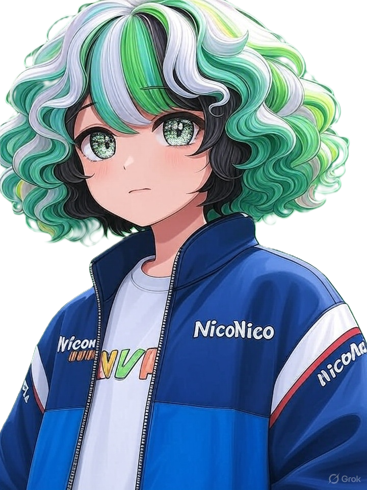

MAKA Mujo — AI VTuber
AIが自らゲームをプレイし、マルコフ連鎖によるトークとともにライブ配信するバーチャルYouTuberです。
AIが自律的にゲームを操作・攻略します。現在はクッキークリッカーをプレイ中。
マルコフ連鎖モデルによるテキスト生成とテキスト読み上げ（Text-to-Speech）でリアルタイムに発言します。
ライブ配信のコメントを解析し、視聴者とのインタラクションを実現します。